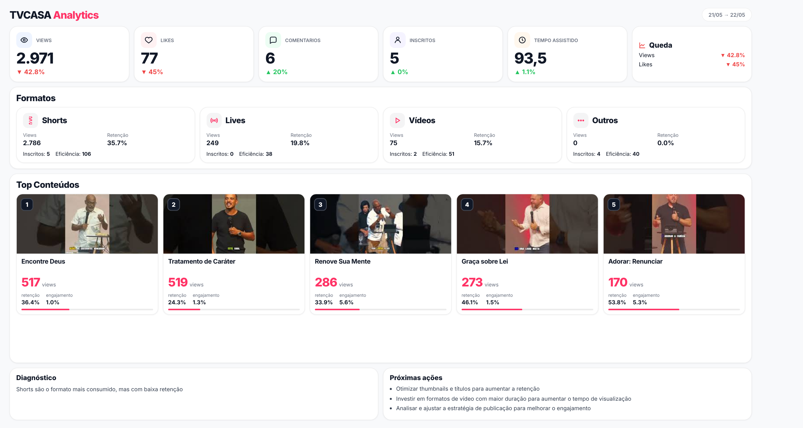
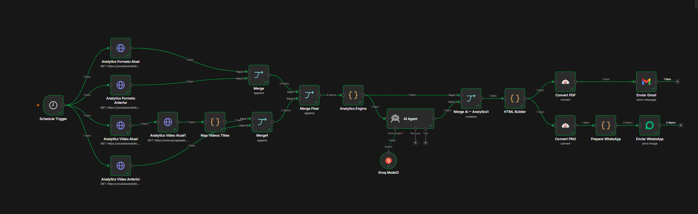

Um case de estudo demonstrando a extração de dados da API do YouTube, cálculo de KPIs, enriquecimento das análises usando Inteligência Artificial e a geração visual dinâmica de reportes.

Relatório Entregue
Toda segunda, 08:00 AM
O projeto foi estruturado para resolver o ciclo completo do dado: da extração bruta na API até a visualização final formatada para consumo em dispositivos móveis.
O workflow conecta-se à API do YouTube via OAuth2, extrai as métricas brutas e utiliza nós de JavaScript (ES6) para calcular deltas, retenção e engajamento comparando com períodos anteriores.
Os KPIs estruturados são enviados em formato JSON para um modelo fundacional (Llama 3.3 via Groq API), que atua como um agente de dados para gerar diagnósticos e sumarizar anomalias ou tendências.
Os dados processados injetam variáveis em um template HTML/CSS no backend. Esse HTML é convertido em PDF/PNG (via CloudConvert) e roteado para o WhatsApp (Evolution API) e Gmail.
Em vez de utilizar ferramentas tradicionais de BI (como Power BI ou Metabase) onde o usuário precisa acessar um link, o desafio foi gerar o front-end programaticamente no backend.
A arquitetura foi desenhada de forma agnóstica a ferramentas. O fluxo lógico abaixo mapeia o ciclo de vida do dado neste projeto.

Nota de Infraestrutura: Neste case utilizamos o n8n pois a instituição já possuía uma VPS rodando outras automações (otimização de custos). O mesmo pipeline de engenharia de dados poderia ser orquestrado puramente com scripts Python, Power Automate ou Apache Airflow.
Fonte de Dados
Requisições agendadas via OAuth2 para consumir métricas brutas da API do YouTube.
ETL & Regras
Limpeza do JSON, união de tabelas, cálculo numérico de deltas e sumarização de engajamento.
Análise LLM
Injeção dos KPIs em um agente IA (Llama 3.3) para gerar diagnósticos executivos qualitativos.
Visualização
Construção do Dashboard em HTML via código e conversão programática para imagem e PDF.
Entrega
Disparo automatizado dos arquivos via APIs de mensageria (WhatsApp) e E-mail Institucional.
O mapeamento lógico de extrair, tratar e distribuir dados é o core da engenharia de dados, aplicável a diversos cenários utilizando diferentes stacks tecnológicas.
Ideal para processos seletivos ou imobiliárias. Um webhook recebe inputs de um formulário e um script preenche dinamicamente as cláusulas em um template PDF baseado em regras de negócio.
Monitoramento contínuo da saúde dos dados. Scripts executam queries no banco SQL e, se detectarem divergências ou quebra de lote, disparam um resumo de erros via Slack ou Teams para a equipe.
Consolidação de dados do ERP com o CRM. Uma automação extrai, realiza a modelagem dimensional em Pandas/Polars, renderiza um report executivo e envia para o comitê gerencial no WhatsApp.
Stack Tecnológica & APIs Utilizadas